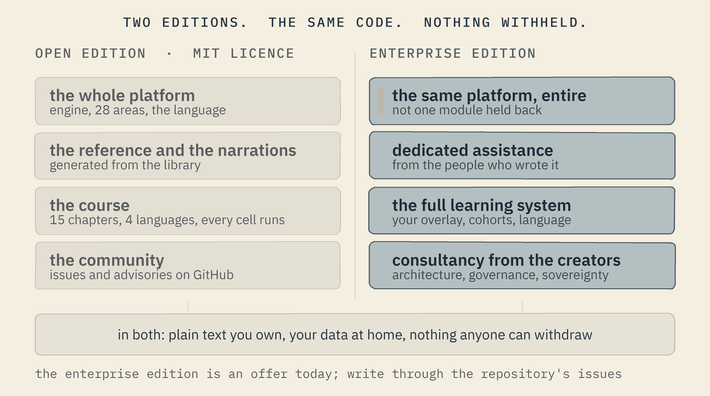
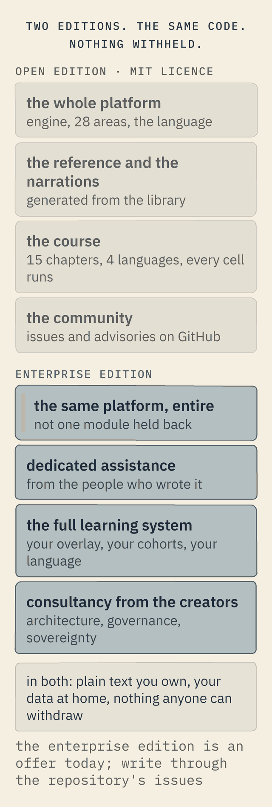

Two editions, the same code
The open edition is the whole platform under the MIT licence. The enterprise edition is the same platform, entire, with the people who wrote it.
Two editions, the same code


The open edition
Everything on this site, under the MIT licence: the engine, the twenty-eight areas, the language as it runs today, the reference, the 134 narrations, the course in four languages (three of them drafts), the guards. Issues and security advisories on GitHub. No account, no licence per seat, no telemetry: a folder, copied.
github.com/mayouni/stzlib(opens in a new tab) · LICENSE(opens in a new tab)
The enterprise edition
The same platform, entire: not one module is held back for paying customers. Added to it: dedicated assistance from the people who wrote the platform; the full learning system deployed for your institution, with your overlay, your cohorts and your language; and consultancy from the platform's creators on architecture, governance and sovereignty, including a sovereignty verdict for every dependency of your system.
An offer today, not a product page with a price: write through the repository's issues(opens in a new tab). The learning system has no adopter yet: see what is proved, and what is not.
The Softanza way The platform is free and whole for everyone. What an enterprise buys is time with the people who built it, and a guarantee that what it builds remains its own.
What you own, in both editions
Your worlds, rules, courses and agents are plain-text files in folders you keep. The engine's source is in the repository and builds for Windows, Linux and macOS. The course is plain text, adapted by overlay and never by fork, and a learner's progress is a text file you can read forever. Nothing anyone else can withdraw; the Vision page says what that sentence means and what it does not.